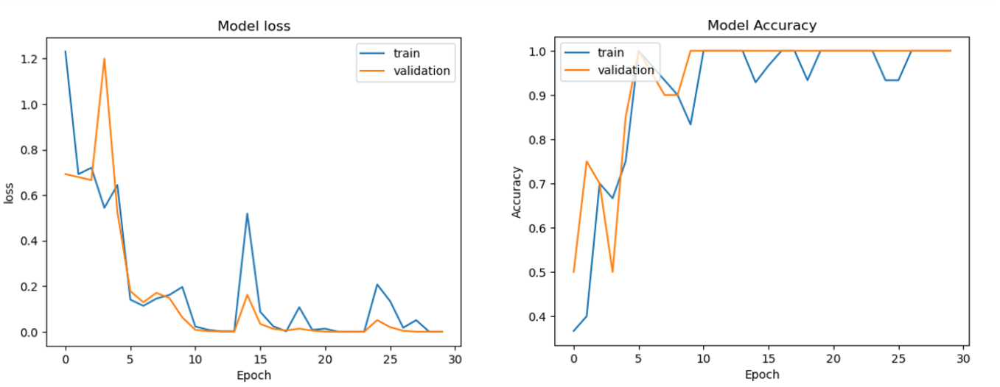
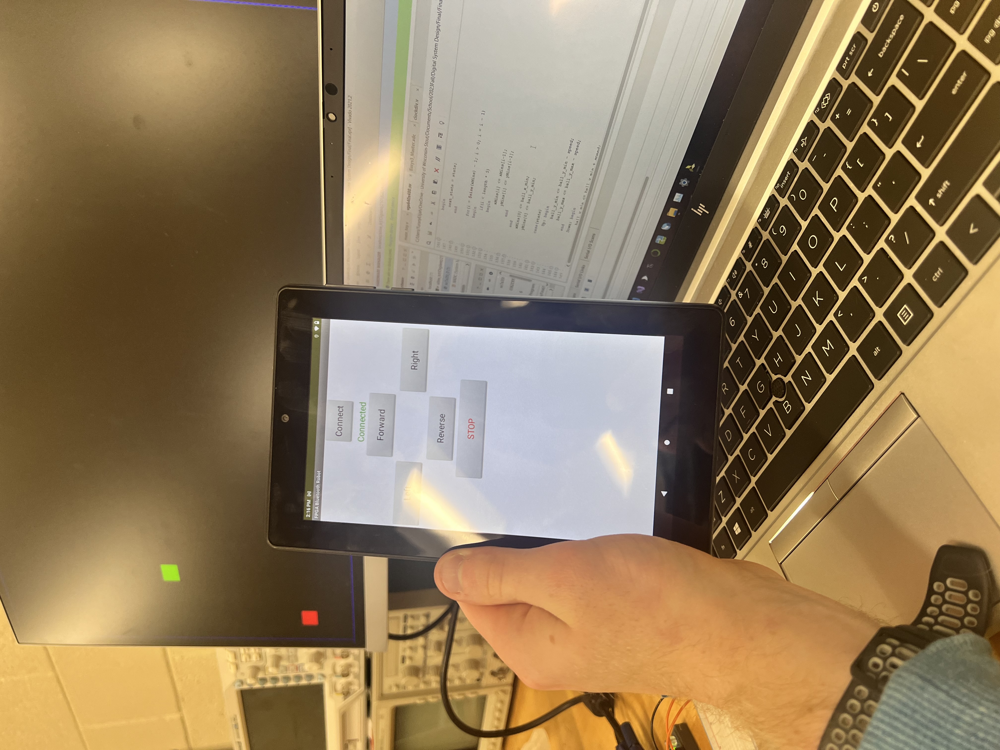

Projects
Smart Thermostat
Team Project for ETECH-100 Class. First experience working with hardware and software. Worked on software for the device. Software included menu system to reset the clock and temperature which displayed results on a LCD screen. Software was written in Arduino code which is very similar to C/C++.
Convolution Neural Network
Individual Project for CEE-235 (signals and systems). Trained a neural network using the principle of convolution, to develop a binary classification system between two datasets. System was created using the TensorFlow library in Python.
Bluetooth Snake game
Pair project for CEE-325 (Digital System Design). Project involved using a FPGA board to receive Bluetooth communications to control a VGA monitor. First experience with hardware descriptive language or VHDL.
Contact me
Email: petersonm3394@my.uwstout.edu
Address: 1203 7th St E, Menomonee WI, 54751
Phone: 715-563-7574